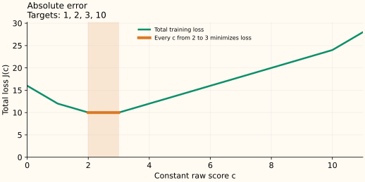

Absolute Error: Why the Best Constant Is a Median
Absolute error counts how many observations want a constant prediction to move left or right. A distant point does not get a larger slope merely because it is farther away. This is why the optimum is a median.
The loss and correction target
The score is the prediction, and the one-row loss is
If $F<y$, increasing $F$ decreases the loss at rate 1. If $F>y$, increasing it raises the loss at rate 1. Away from equality, the negative-gradient target is $\operatorname{sign}(y-F)$: $+1$ for underprediction and $-1$ for overprediction. At equality the loss has a corner, so we use a subgradient instead of an ordinary derivative.
Count the slopes on either side
For a shared prediction $c$, minimize $J(c)=\sum_i|y_i-c|$. If $c$ does not equal any observation, every point below $c$ contributes slope $+1$ and every point above it contributes $-1$. Therefore
where $N_{<}$ and $N_{>}$ count targets strictly below and above $c$. If more points are above, the slope is negative: moving right reduces the loss. If more are below, moving left helps.
At an observation, each tied term contributes a possible slope anywhere in $[-1,1]$. Let $N_=$ count those ties. The possible aggregate slopes form the interval
This convex function is minimized when that interval contains zero. Since the three counts sum to $n$, the condition becomes
Neither side may contain more than half the observations. That is exactly the defining property of an empirical median.
Why the best constant need not be unique
Sort the targets as $y_{(1)}\le\cdots\le y_{(n)}$. For odd $n$, the middle value is a minimizer. For even $n$, every value between the two middle observations minimizes the loss:
For $[1,2,3,10]$, that interval is $[2,3]$. At 2 the total loss is $1+0+1+8=10$; at 3 it is $2+1+0+7=10$. Between them, two distances grow at exactly the rate the other two shrink. The conventional median 2.5 is one optimal choice, not the only one.


Weighted medians use weight on each side
For $J(c)=\sum_iw_i|y_i-c|$ with nonnegative weights of positive total, replace the counts by total weights. A weighted median leaves at most half the total weight strictly below it and at most half strictly above it. This is generally different from a weighted mean.
What robustness does and does not mean here
Moving the target 10 farther to the right leaves the example’s optimal interval $[2,3]$ unchanged. It still counts as one point on the right. Moving enough observations, or assigning a large weight to one, can change the median. For a loss with residual-sized slopes near zero and capped slopes outside, continue to Huber loss.
Sources and reproducible figures
The examples and plots are computed by this reproduction script, which also checks the stated minima. Inspect the figure data.